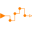
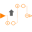
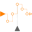

SamplerLibrary of sampler and hold blocks for Integer signals |
|
Package Contents
|
Sample the continuous-time, Integer input signal and provide it as clocked output signal (clock is inferred) |
|
|
Sample the continuous-time, Integer input signal and provide it as clocked output signal. The clock is provided as input signal |
|
|
Sample the continuous-time, Integer input signal vector and provide it as clocked output signal vector. The clock is provided as input signal |
|
|  |
Hold the clocked, Integer input signal and provide it as continuous-time output signal (zero order hold) |
|
Sub-sample the clocked Integer input signal and provide it as clocked output signal |
|
|  |
Super-sample the clocked Integer input signal and provide it as clocked output signal |
|
Shift the clocked Integer input signal by a fraction of the last interval and and provide it as clocked output signal |
|
|
Shift clock of Integer input signal backwards in time (and access the most recent value of the input at this new clock) |
|
|
Assign a clock to a clocked Integer signal |
|
|  |
Assign a clock to a clocked Integer signal vector |
|
Utility components that are usually not directly used |
Information
This information is part of the Modelica Standard Library maintained by the Modelica Association.
This package contains blocks that mark boundaries of a clocked partition
and transform an Integer signal from one partition to the next. Especially,
the following blocks are provided:
| Boundary Type | Block Name | Description |
|---|---|---|
| continuous-time → clocked | Sample | Sample a continuous-time signal. |
| SampleClocked | Sample and associate a clock to the sampled scalar signal. | |
| SampleVectorizedAndClocked | Sample an input vector and associate a clock to the sampled vector signal. | |
| clocked → continuous-time | Hold | Hold a clocked signal with zero-order hold. |
| clocked → clocked | SubSample | Sub-sample a signal (output clock is slower as input clock). |
| SuperSample | Super-sample a signal (output clock is faster as input clock). | |
| ShiftSample | Shift a signal (output clock is delayed with respect to input clock). | |
| BackSample | Shift a signal and start the output clock before the input clock with a start value. | |
| within clocked partition | AssignClock | Assign a clock to a clocked scalar signal. |
| AssignClockVectorized | Assign a clock to a clocked vector signal. |
Additionally, package Utilities contains utility blocks that are used as building blocks for user-relevant blocks.